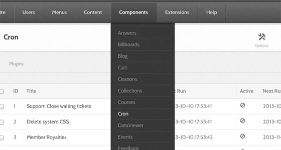
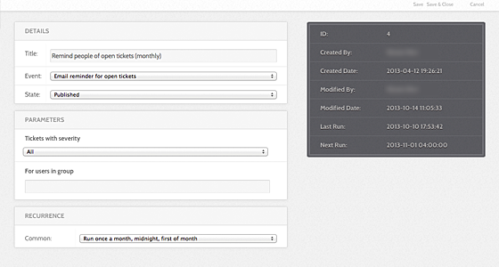
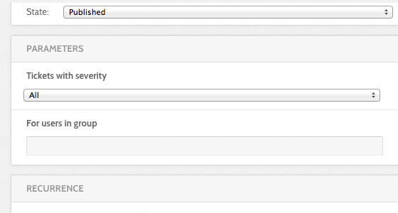
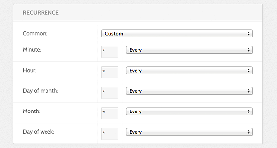

Hub managers
Scheduled Tasks
The Cron component manages the hub's scheduled jobs — digest emails, cache cleanup, search indexing, DOI registration, and the rest. Go to Components → Cron.

How it works
Unix cron does not run each hub job. It ticks the CMS, once a minute, and the CMS runs whichever jobs are due. Everything about a job — what it does, how often, and whether it runs at all — is configured in the administrator interface.
There are two ways to deliver the tick.
Over HTTP. A request to index.php?option=com_cron&task=tick&no_html=1
runs the pending jobs. The request must come from an allowed address: the
caller either has core.manage on com_cron, or its IP is in the
component's whitelist option (default 127.0.0.1), or it resolves to the
server's own hostname or to localhost. Anything else gets a 404.
From the command line. muse cron:jobs tick makes that HTTP request for
you, taking the URL from the CMS live_site setting and holding a lock so
ticks cannot pile up:
* * * * * apache /var/www/yourhub/core/bin/muse cron:jobs tick >> /var/log/hub-cron.log
The cron:jobs command has four other tasks:
| Task | What it does |
|---|---|
run |
Run pending jobs in this process. --job=5 runs only that job |
list |
List jobs that are due. -a lists every published job |
deactivate |
Mark a job inactive |
unpublish |
Unpublish a job |
cron:jobs is a component command, so it does not appear in muse help or in
the generated muse reference, which covers
only the commands under core/libraries/Hubzero/Console/Command/. Run
muse cron:jobs help for its own documentation.
Jobs claim themselves before running, so a manual run from the administrator interface and a scheduled tick cannot execute the same job at once, and a job whose process died is reclaimed.
The job list
The list shows each job's ID, title, state, recurrence, start and end dates, whether it is active, and its last and next run times. The toolbar carries Run (run the selected jobs now), Publish, Unpublish, Deactivate, New, Delete, and Options.
Options holds one setting, the IP whitelist — see the generated parameter list.
Creating and editing a job
A job has four fieldsets: Details, the event's own Parameters, Recurrence, and Publishing, plus an Execution option.
Details

- Title (required) What the job is called in the list.
- Event (required) The plugin event this job triggers, chosen from a drop-down grouped by plugin. This is the job — everything else is scheduling. The event cannot be changed to something no installed cron plugin offers.
The events on offer come from the enabled plugins in core/plugins/cron/:
| Plugin | Events |
|---|---|
activity |
emailMemberDigest |
cache |
cleanSystemCss, trashExpiredData |
courses |
syncPassportBadgeStatus, emailInstructorDigest |
forum |
emailGroupForumDigest |
groups |
cleanGroupFolders, sendGroupAnnouncements, expireGroupMemberships, notifyExpiringMemberships |
members |
onPointRoyalties |
newsletter |
processMailings, processIps |
projects |
computeStats, googleSync, gitGc |
publications |
sendAuthorStats, rollUserStats, runMkAip, issueMasterDoi, updateFtpLinks, buildPublicationBundles |
resources |
issueResourceMasterDoi, auditResourceData, emailMemberResources, updateResourceRanking |
search |
processQueue, runFullIndex |
storefront |
emailPublishDownNotifications |
support |
onClosePending, sendTicketsReminder, sendTicketList, cleanTempUploads |
users |
cleanAuthTempAccounts |
The cron events reference lists each event with its listeners.
Parameters

Every event brings its own parameters, and the form swaps them in when you pick the event. An event with none shows "No parameters found".
Recurrence

Frequency offers the common schedules:
| Option | Cron expression |
|---|---|
| Run once a year, midnight, Jan. 1st | 0 0 1 1 * |
| Run once a month, midnight, first of month | 0 0 1 * * |
| Run once a week, midnight on Sunday | 0 0 * * 0 |
| Run once a day, midnight | 0 0 * * * |
| Run once an hour, beginning of hour | 0 * * * * |
| [ Custom ] | Set the five fields below by hand |
Choosing [ Custom ] opens Minute, Hour, Day of month,
Month, and Day of week. Each has a drop-down of common values —
Every, Every 5, Every 10, weekday and month names — and a text box for
anything else.
Publishing
- State — Published, Unpublished, or Trashed. Only published jobs run.
- Start running / Stop running — an optional window. A job outside its window is skipped even while published.
The list also shows an Active flag. That is not a setting: it means the job is running right now, or was claimed by a process that has not released it. Deactivate clears a stuck claim.
Execution
-
Run in a detached process — run the job in its own background process instead of inside the web tick, so a long batch job does not tie up a web worker. A detached job runs without a web request, so it cannot build correct absolute URLs unless
live_siteis set. The form warns when it is empty. Never enable it for a job that emails links.
Rewritten and checked against 2.4-main @ 123ea53b14 on 2026-09-09.